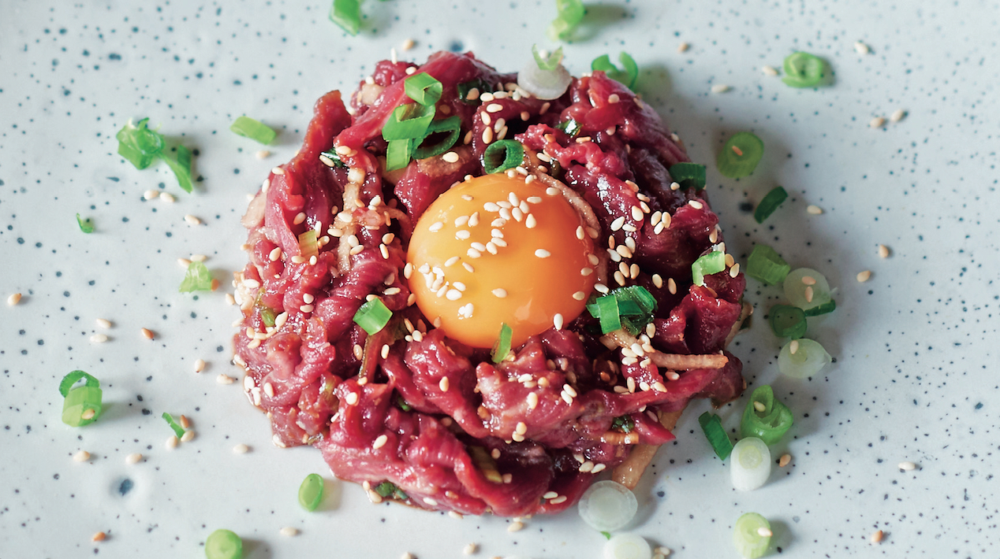

"Tartare"

Histoire du tartare
Une association entre peuple sanguinaire et steak tartare devenue célèbre dans le roman de Jules Verne, Michel Strogoff, publié en 1876 et adapté au théâtre. Dans la pièce, le héros qui effectue un périple en Sibérie se fait proposer un koulbat, décrit comme «un pâté fait avec de la viande pilée et des œufs».
Il est également dit que le tartare, tout comme le hamburger, nous viendrait de la ville de Hambourg en Allemagne. Ce plat de viande hachée crue porte le nom de steak de Hambourg et aurait conquis le reste de l’Europe.
Liste d'ingrédient
- 30 ml (2 c. à soupe) de jus de citron
- 30 ml (2 c. à soupe) de moutarde de Dijon
- 15 ml (1 c. à soupe) de moutarde à l’ancienne/li>
- 1 jaune d’oeuf
- 15 ml (1 c. à soupe) de câpres, égouttées et hachées
- 10 ml (2 c. à thé) de sambal oelek
- 60 ml (¼ tasse) d’huile d’olive
- 675 g (1 ½ lb) d’intérieur de ronde de boeuf très frais (non attendri)
- 30 ml (2 c. à soupe) de persil plat ciselé
- 45 ml (3 c. à soupe) de ciboulette ciselée
- 45 ml (3 c. à soupe) d’échalote française hachée finement
étape de préparation
- Dans un grand bol, mélanger le jus de citron, les moutardes, le jaune d’oeuf, les câpres et le sambal oelek. Ajouter l’huile en filet en fouettant continuellement. Rectifier l’assaisonnement.
- À l’aide d’un couteau, hacher finement la viande. Ajouter la vinaigrette, les herbes et l’échalote à la vinaigrette. Saler, poivrer et bien mélanger. Si désiré, ajouter du sambal oelek au goût. Accompagner le tartare de croûtons de pain baguette grillés, de frites maison et de salade verte.